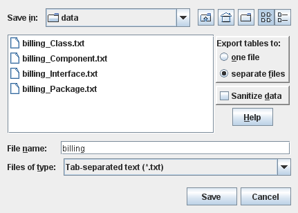

| Prev - Next - Down | SDMetrics - the UML design measurement tool |

Figure 23: Data Export Dialog
To specify the export, you have a number of options:
Select export to one file or separate files. Usually, you will have several data tables, one for each element type. Here you specify if you want to store all tables in one file, or have each table written to a separate file.
Sanitize data. This option is only applicable to the data tables of the metric data tables view. The first table column of those tables shows the names of the design elements that were analyzed. Check this option to suppress the output of the element names. This can be useful if, for confidentiality reasons, you want to pass on or publish the metric data without disclosing the element names.
Select the file name. Enter the name of the file to write the
data to. If you chose to export the data to separate files, the name
you enter here will serve as a base name for the files created.
Example: You have tables for classes, packages, and interfaces, and
enter "data" as file base name. This will create three
files:
Select the file format (Files of type). The following formats are available from the "Files of type" dropdown list:
| Prev | Up | Next |
| Section 4.15 "Exporting Data" | Contents | Section 4.15.2 "Exporting Graphs" |